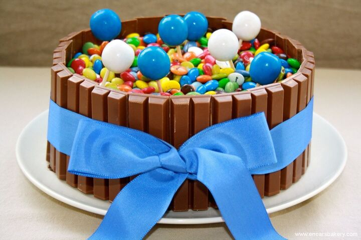

Recetas favorita de la semana
Postre de frutilla con interior de frutilla.
Edicion especial: Muffins
¡Todos los secretos para que te queden riquisimos!

Torta golosinera
¡Ideal para los más chiquitos!
Recetas
Budin de limón
Esta receta es la salvadora cuando tenés ganas de comer algo casero, dulce y rico pero no te das mucha maña con la pastelería. Lo mágico de los budines es que es “mezclar todo y listo” dicho muy por arriba. Este budín de limón se puede comer recién hecho pero yo te recomiendo hacerlo el día anterior, o si lo querés para merendar lo hagas esa mañana apenas te despiertes. Por qué? Porque cuando van pasando las horas los budines van ganando contextura y quedan mucho más firmes y ricos! Es infalible, si no preparás esto y a la persona que invitás no le gusta: no es la persona indicada para estar a tu lado querido amigo o amiga. Salí de ahí. No te merece.
Comenzamos con el budin de limón
| Ingredientes | Gramaje | Indicaciones |
|---|---|---|
| Manteca | 200 gr | A temperatura ambiente |
| Azúcar | 200 gr | |
| Harina 0000 | 250 gr | |
| Polvo de Hornear | 10 gr | 1 cda |
| Jugo de Limón | 50 ml | |
| Huevos | 4 | Medianos |
| Ralladura de limón | 2 limones |
Antes de arrancar ningún paso: a prender el horno se ha dicho! Siempre siempre siempre, antes de hacer nada precalienten el horno. Ya prendiste el horno a 170°? Perfecto!
1 En un bol grande batir los huevos con el azúcar hasta homogeneizar. Si se va a batir con batidora eléctrica hacerlo de 5 a 10 minutos, si es con batidor de globo: a ojo. Hay que batir a blanco. Es decir, hasta que se forme como una crema bien clarita.
2 Agregar la manteca, la ralladura y el jugo de limón a la mezcla batiendo hasta que se incorpore bien.
3 Añadir la harina 0000 y el polvo de hornear. Mezclar bien y verter en un molde tipo budín inglés o rectangular previamente enmantecado y enharinad
4 Llevar a horno moderado 170° por más o menos 40 o 45 minutos (siempre depende mucho de cada horno). Chequear su cocción con un palito de madera, al pinchar el budín de limón el palito debe salir seco.
5 Una vez que esté desmoldar y dejar enfriar sobre una rejilla metálica. Luego que enfríe ya se puede glasear.